Decode human intent
Decode task and action intent from EEG while using EMG, gaze, vision, and task context to ground neural signals in ongoing behavior.
EEG decoding · Intent inferenceAbout me
Paper accepted at IROS 2026 ↗Multimodal intelligence for robots that work with people.
I am a Ph.D. researcher in Aerospace & Mechanical Engineering at Saint Louis University, advised by Prof. Madi Babaiasl in the MechaRithm Lab. I combine EEG, EMG, eye tracking, vision-language-action models, and robot learning to build human–robot interaction systems that understand intent and act safely under uncertainty.
My background spans mechatronics and data science. I test my ideas on synchronized human-sensing systems and on a Kinova Gen3 robot arm, and I care most about methods that stay dependable when sensors are noisy, people differ, and task conditions change.
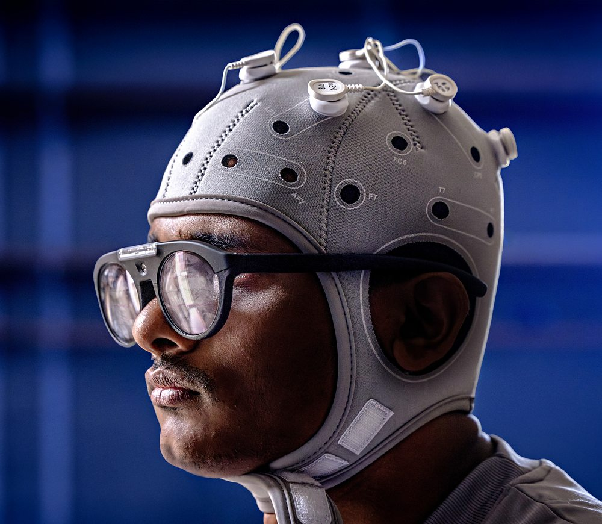
Multimodal human sensing with EEG, EMG, and eye tracking.
Curriculum vitae
The essentials at a glance. The full four-page CV, with every publication, is one click away.
Saint Louis University
Expected Apr 2027St. Louis, MO
Fordham University
May 2024New York, NY
Kyungsung University
Feb 2022Busan, South Korea
Saint Louis University — MechaRithm Lab
Video-to-robot imitation learning, RGB-D perception (SAM2 segmentation, temporal depth fusion, 3D back-projection) and reliability-gated manipulation on a Kinova Gen3. Built a 570-condition, 27,360-frame long-tail benchmark with a 0.782-AUROC reliability estimator, and audited 1,099 demonstrations across 154,844 frames.
Jun 2024 — PresentSt. Louis, MO
Authentic Brands Group
SQL and pandas analysis across Salesforce, database and Excel sources; Tableau dashboards; automated ETL, data-quality checks and weekly KPI reporting.
Jan — Apr 2024New York, NY
Fordham University — multimodal AI for clinical NLP & imaging
Radiology report summarization, fusion ablations and calibration (ECE) evaluation, leading to SumGPT, MemesViTa, MediGPT and GastroVRG.
2022 — 2024New York, NY
Kyungsung University — switched reluctance machines
Design, control and simulation of a switched reluctance motor/generator for flywheel energy storage.
May 2021 — Jul 2022Busan, South Korea
My research
My work connects neural and behavioral sensing, uncertainty-aware learning, vision-language-action (VLA) models, and robot decision-making. The goal is not only to predict what a person wants, but to determine whether the evidence is reliable enough—and whether the robot’s next action preserves the person’s ability to change course.
Decode task and action intent from EEG while using EMG, gaze, vision, and task context to ground neural signals in ongoing behavior.
EEG decoding · Intent inferenceGive each sensor a reliability with a defined meaning, so a robot can tell a failing sensor from a person who has not decided yet.
Information fusion · UncertaintyExplore vision-language-action models that translate visual context and high-level instructions into grounded robot behavior.
VLA models · Embodied AIDesign robot policies that make useful progress while remaining recoverable, allowing people to revise a task before commitment becomes costly.
Decision-making · Shared autonomyResearch videos
All project videos are collected here—from accepted-paper demonstrations and multimodal HRI studies to the intermediate views used to debug video-to-robot learning.
Conference videos for the two first-author papers accepted in 2026, both run on a Kinova Gen3 with live EEG, EMG and eye tracking.
A robot that moves only when brain, muscle and gaze signals show the user is ready to commit, and the camera confirms the target is reachable.
All five assistive tasks, with commit-only and feasibility-only baselines failing beside the full gate.
Brain, muscle and gaze signals weighted by how reliable each one is, so a failing sensor stops the robot instead of misleading it.
Ongoing work toward IEEE T-RO: ordinary video of a person becomes robot training data, step by step.
An ordinary human demonstration before perception, retargeting, and policy preparation.
The person inpainted out, the robot rendered from the calibrated camera pose, and a depth check of which parts of the arm stay visible.
A simulated Kinova arm composited into the scene to support robot-policy learning.
EEG, EMG and eye tracking recorded together through Lab Streaming Layer during the five tasks behind the IROS and BioRob papers: clock, bottle, fan, plant and wave.
Synchronized biosignal recording during goal-directed reaching.
Human-intent recording under a controlled interaction protocol.
Multimodal observation of a close-range interaction task.
Goal-directed reaching with synchronized physiological sensing.
Action-intent capture for cross-person multimodal modeling.
Recent projects
New results on telling a failing sensor from an undecided person, two accepted papers, ongoing robot learning from human video, and the question I am working toward next.
BioGazeFormer · Reliability-discounted evidential fusion
When an intent decoder is unsure, two different things can be wrong: a sensor is failing, or the person has not decided yet. The first calls for a sensor check, the second for waiting, and a decoder that reports only its confidence cannot tell them apart.
BioGazeFormer gives each sensor a reliability with a defined meaning, the share of its evidence that survives damage, learns it from a library of sensor faults, and discounts each sensor's evidence by it before fusion. Trained on the moments when people switch from rest into a task, it also flags changing intent. In leave-one-subject-out tests on 22 people, it told a failing sensor from changing intent with an AUROC of 0.90 (0.65 for evidential fusion without supervised reliability) and matched the accuracy of the best fusion baselines; on 8 more people never used in development, its accuracy again matched the best baseline.

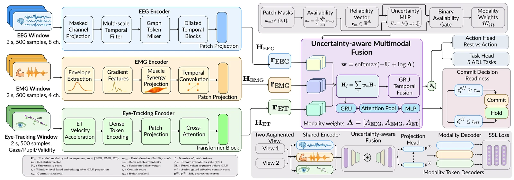
Commit-readiness for shared autonomy: learning when multimodal evidence is strong enough to release robot motion.
View project ↗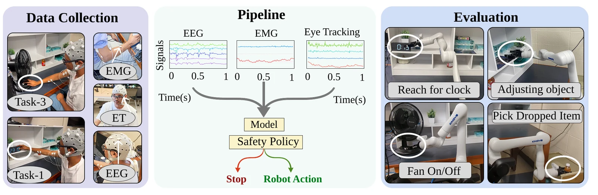
Reliability-gated EEG, EMG, and gaze fusion for robust intent recognition in physical HRI tasks.
View project ↗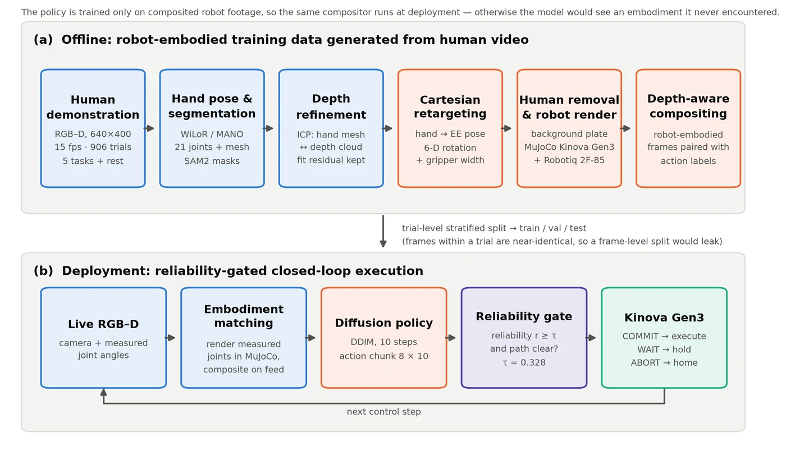
Learning robot manipulation from ordinary human demonstrations with perception-aware execution.
View project ↗T‑RO concept
An HRI system rarely has a complete specification of what a person wants or what the environment will allow. This work studies how a robot can make useful progress under that uncertainty while preserving human revision, recoverability, and safe commitment.
The central question is when the robot should continue gathering evidence, take a reversible step, or commit to an action. The aim is proactive assistance that remains responsive to the person—not autonomy that gets ahead of them.
Publications
All sixteen peer-reviewed papers: six journal articles and ten conference papers across human–robot interaction, multimodal fusion, EEG and EMG decoding, and clinical AI. Representative papers are highlighted.
Google Scholar profileIROS 2026 · IEEE/RSJ Intelligent Robots and Systems Accepted
A commit-readiness score from synchronized EEG, EMG and gaze, plus a HOLD–ASSIST–COMMIT supervisor that releases the arm only when perception and kinematics agree the motion is feasible. On 32 subjects: 0.75 false commits per 1,000 rest windows, against 6.5–9.4 for transformer, TCN and GRU baselines.
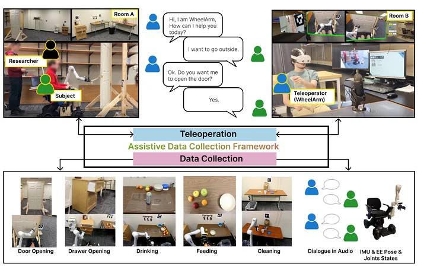
IROS 2026 · IEEE/RSJ Intelligent Robots and Systems Accepted
A two-room Wizard-of-Oz setup that records RGB-D video, conversational audio, IMU, end-effector pose and whole-body joint states while users direct a wheelchair-mounted arm by dialogue; a 53-trial pilot across five assistive tasks.
BioRob 2026 · IEEE RAS/EMBS Biomedical Robotics and Biomechatronics Accepted
A lightweight transformer that fuses EEG, EMG and gaze through reliability-gated cross-modal attention, judged by what its safety policy does when a sensor fails: 0.903 action and 0.727 task accuracy across 20 subjects, leave-one-subject-out.
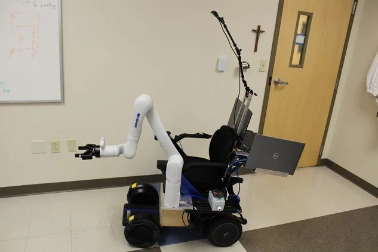
BioRob 2026 · IEEE RAS/EMBS Biomedical Robotics and Biomechatronics Accepted
A dialogue-based protocol in which a simulated intelligent agent clarifies intent and carries out cleaning, drinking, feeding, drawer- and door-opening with a wheelchair and robotic arm; in a five-participant pilot, most users enjoyed the dialogue and the robot's autonomy.
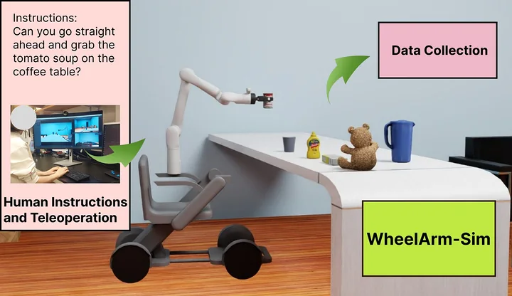
ISMR 2026 · International Symposium on Medical Robotics Accepted
An Isaac Sim framework for collecting combined wheelchair-and-arm data (13 tasks, 232 trajectories, 67,783 samples), with a baseline action-prediction model showing the synthetic data supports learning integrated control.
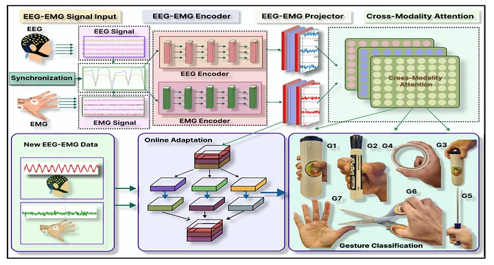
IEEE Access · vol. 13, pp. 103245–103263
Cross-modality attention, dynamic EEG–EMG synchronization and adaptive online learning for gesture-intent recognition: 97% and 96% accuracy on two public datasets after online adaptation. Removing cross-modal attention costs 6.1 points; turning off synchronization costs 6.7.
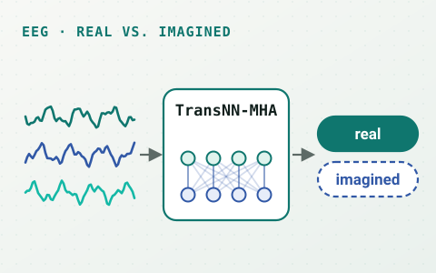
IEEE Access · vol. 13, pp. 83650–83673
A decoder-free transformer with multi-head attention that separates executed from imagined movement in EEG, which an assistive interface needs for users who can only imagine moving: 92% accuracy on the EEG Motor Movement/Imagery dataset, ahead of CNN- and GRU-transformer hybrids.
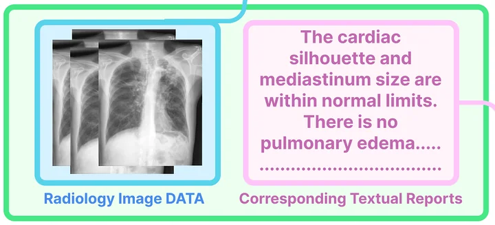
IEEE Access · vol. 13, pp. 15929–15945
Pairs a T5 language model with a Vision Transformer so the summary is written from the scan and the report together. Trained on 1,952 image–report pairs, it beat VisualGPT, T5 + CLIP, XLM-RoBERTa + ViT and BERT + EfficientNet on all four metrics (ROUGE-1 0.8514, BLEU 0.8470).
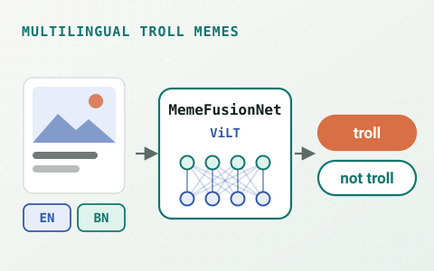
ICCAD 2025 · Control, Automation and Diagnosis · pp. 1–6
ViLT-based cross-modal attention for troll memes that carries across languages: 96% accuracy on an English and 86% on a Bangla meme dataset.
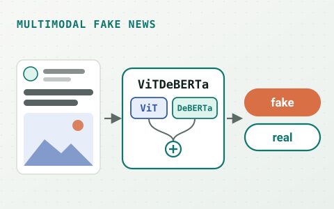
ICCAD 2025 · Control, Automation and Diagnosis · pp. 1–6
Fuses a Vision Transformer with DeBERTa for multimodal fake-news detection (94.8% accuracy on Weibo, 92.6% on Twitter) and sets it against single-modal and LLM baselines, GPT-4 included.
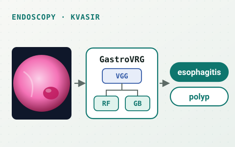
Intelligent Systems with Applications · vol. 23, 200399
An ensemble that extracts VGG features and classifies them with random forest and gradient boosting to separate esophagitis from polyps in 2,000 Kvasir endoscopy images, reaching 99.73% accuracy.
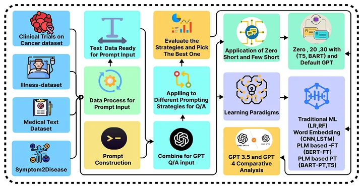
IEEE Access · vol. 12, pp. 103473–103487
A controlled comparison of ChatGPT-3.5 and GPT-4 against fine-tuned and prompt-tuned language models on four medical text-classification datasets; prompt construction, response parsing and strategy selection lifted results 13.6–22.3% without domain-specific training.
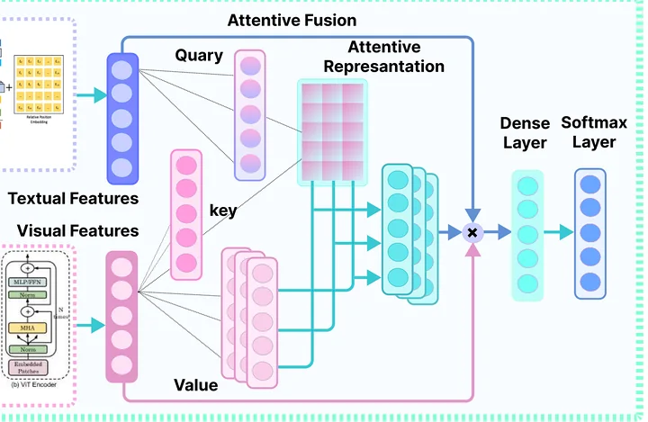
IEEE Access · vol. 12, pp. 177811–177828
Fuses a Vision Transformer with DeBERTa through attentive fusion, so a meme is judged from image and caption together: 94.29% accuracy and 95.82% F1, 41.3% above the best vision-only model and well ahead of GPT-4 prompted with 50 examples.
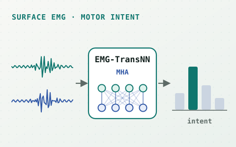
IEEE BigData 2024 · pp. 8691–8693
A multi-head-attention transformer for EMG-based motor-intent recognition, reaching 96.39% test accuracy and outperforming conventional deep- and machine-learning baselines.
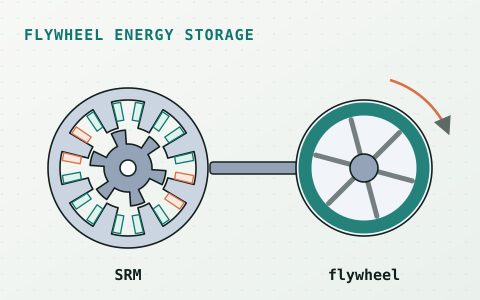
KIEE Conference · pp. 1254–1255
Preliminary design and sizing considerations for a switched reluctance machine in a flywheel energy storage system, with a focus on performance and efficiency.
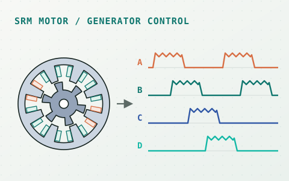
KIEE Conference · pp. 137–139
Control of a switched reluctance motor/generator for flywheel energy storage, for reliable and efficient operation under varying load.
Skills
I work from synchronized human sensing and multimodal learning through robot policies and physical deployment. That end-to-end perspective helps me connect model quality to behavior that matters on real hardware.
View full CVEEG decoding, EMG, eye tracking, temporal synchronization, signal-quality metrics, subject-independent evaluation, and real-time streaming decoders.
Reliability-aware information fusion, transformers, calibration, uncertainty estimation, and modality-dropout robustness.
Vision-language-action models, imitation learning, diffusion policies, RGB-D perception, and learning from human video.
Real-robot integration, shared autonomy, motion planning, feasibility checks, and reproducible system evaluation.
Let’s work together
I’m open to research internships, collaborations, and applied ML/robotics opportunities in human–robot interaction, biosignal decoding, information fusion, vision-language-action models, embodied AI, and robot learning.